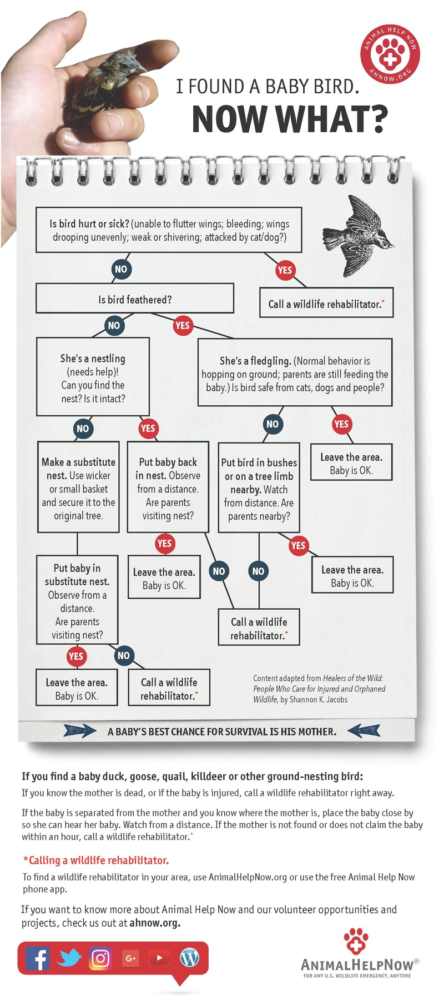
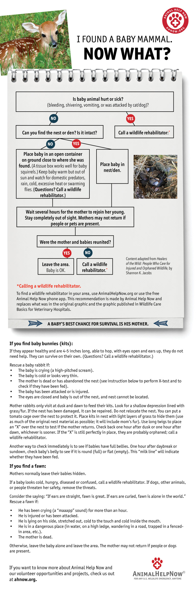
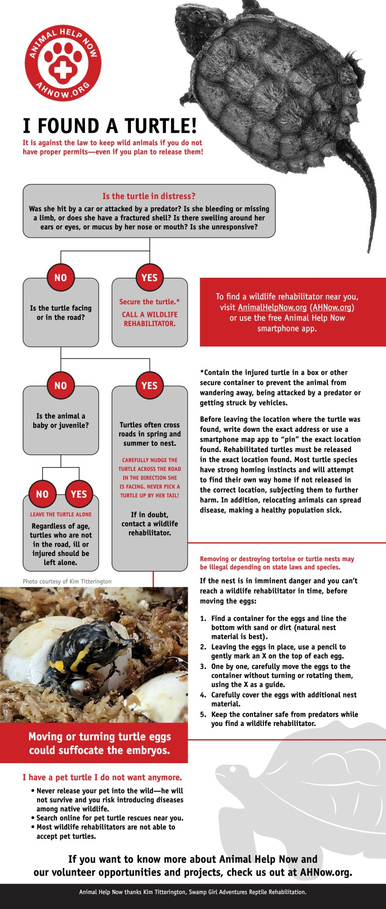

What to do when you find a life starving for a life?
WILDLIFE EMERGENCY:
- I found a baby bird. What should I do?
- I found a baby mammal. What should I do?
- I found a baby owl, hawk or eagle. What should I do?
- I found a baby turtle. What should I do?
- How do I tell if a wild animal is orphaned or if the parents are simply out of sight?
- Should I try to reunite a baby animal with his or her parents?
- How do I capture and transport a wild animal?
- Can I get help transporting wildlife?
I found a baby bird. What should I do?
I found a baby owl, hawk or eagle. What should I do?
Often, well-meaning humans unintentionally take healthy young raptors away from their parents. If you found a baby owl, hawk or eagle and the bird appears to be uninjured, reuniting the baby with his parents is the best approach. If the baby is injured or if you are unsure, use Animal Help Now to find the nearest wildlife emergency professional.
I found a baby mammal. What should I do?
I found a baby turtle. What should I do?
How do I tell if a wild animal is orphaned or if the parents are simply out of sight?
If the mother is confirmed dead or the baby animal is covered with blood or insects, has been caught by a cat, dog or wild animal or is cold, use Animal Help Now to contact a nearby wildlife rehabilitator.
See also:
Should I try to reunite a baby animal with his or her parents?
See also:
How do I capture and transport a wild animal?
Understand that approaching an animal without proper preparation can result in injury to yourself and/or bring further harm upon the animal.
Whenever possible, consult the experts we direct you to before approaching or handling an animal. Their understanding of animal health and behavior may spare you and the animal both trouble and harm.
If you are unable to reach an expert, please refer to the instructions provided by Greenwood Wildlife and Rehabilitation Center for the most appropriate way to capture and transport an animal. If you do not have access to the internet, brief capture and transport instructions are provided below.
DO NOT attempt to capture or transport an animal unless you believe it is absolutely critical to his health and survival. For an injured animal, the shock and fear associated with being handled may be enough to kill him. Further, a frightened animal can cause you harm.
DO NOT attempt to capture or transport rabies vector species, including foxes, skunks, raccoons, groundhogs, and bats, without specific instruction from an expert. Even a small scratch can result in a fatal case of rabies and will almost certainly result in the animal being killed to determine whether or not she has rabies.
Please understand that the risk of disease accompanies handling most animals. Rodents, for instance, may carry a host of communicable diseases. Exercise the utmost caution when handling or capturing an animal.
If you find yourself in a situation where you believe you must capture an animal for the sake of her health and survival, and you have so far been unable to reach an expert, follow the instructions below:
Here are a few species-specific handling and transportation resources: